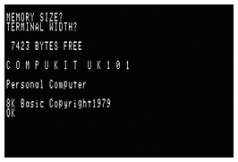
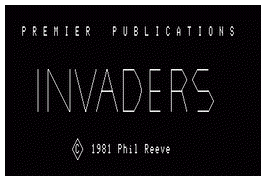
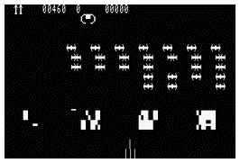

|
The documentation for the Compukit UK101 simulator consists of the following pages:
For programmers interested in understanding or changing the Java source code for the simulator, some extra documentation is available:
The project itself is available from SourceForge or GitHub:
http://uk101.sourceforge.net https://github.com/tjb803/UK101
At present SourceForge hosts the latest public packages with the latest source code available from GitHub. Over time the packages and webpages will also move to GitHub and the SourceForge site will be retired.
The aim of this project is to produce a simulation of the Compukit UK101 computer that is capable of running original UK101 programs. In particular it is an aim to be able to run the Premier Publications Invaders space invaders game, which ought to be a good test of a working system.
|  |  |  |
The project has been written in Java to enable it to run easily on most systems and the user interface elements have been written as simple Java Swing interfaces.
The project provides a fairly complete emulation of a standard UK101. The default configuration has 8KB of RAM and an original 16 row by 48 column video display. It is fitted with the original BASIC ROMs and the New Monitor (or MONUK02) monitor ROM. Many of these parameters can be changed via a set of configuration properties.
The UK101 was heavily based on and very similar to the US Ohio Scientific
Superboard II machine.
By using the ROM images from the Superboard
and setting the correct keyboard and video configuration this simulation
will work as an OSI machine and run programs for the Superboard.
A suitable set of ROMs and a sample set of configuration properties
can be be found in the samples/superboard directory.
new monitorsupplied with later machines.
Although I don't know any of these people, I think they all deserve an honourable mention for starting me down a path which still continues!
technical advice. As someone who soldered their kit together a little too quickly and then found it didn't quite work first time, I phoned him and he got me up and running.
And these people have helped significantly with testing, suggestions, explanations, programs etc:
| Tim Baldwin May 2022 tjb101@tinymail.co.uk |
© Tim Baldwin 2010,2022 |